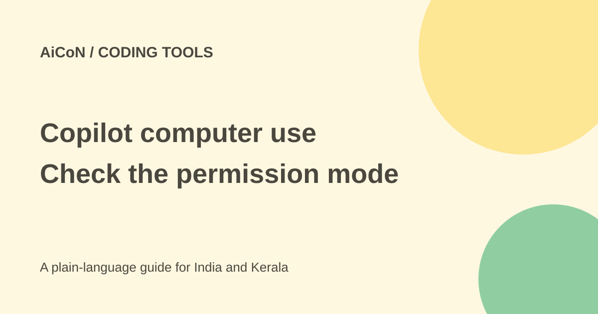

GitHub Copilot desktop control: permissions and risks
GitHub Copilot can read and control desktop apps through computer use in its CLI and app on macOS and Windows. The feature is a public preview and disabled by default. Approval behaviour depends on the active permission settings.

What can it do?
Copilot can inspect accessible app content or screenshots, click controls, type, scroll, drag and move through workflows. This can help with software that has no API, command-line interface or MCP tool.
Desktop control can also affect real files, accounts and other people. A signed-in app is not a harmless demonstration. Check the target and requested action before letting a tool control it.
Read the permission mode first
The launch says Copilot asks before controlling an app. The current docs qualify that: computer use follows the permission mode of the surface where the session runs. In the CLI, use /permissions show to review the active mode.
When approval is required, you can allow a session, deny it or choose Always allow. A saved app approval applies to both the Copilot app and CLI on the same computer. Removing it affects future sessions, but does not revoke access already granted in a running session.
How to test with a harmless app
- Read the official computer-use docs and check your organisation's policy.
- Use a local Mac or Windows session with a test document and no private information on screen.
- Review the current tool permission mode before enabling computer use.
- In Copilot CLI, enter /computer on, then /computer show to check status. In the app, use Settings, Computer Use.
- On macOS, inspect the requested Accessibility and Screen Recording permissions.
- Ask for a small action in one non-sensitive app. Prefer session-only approval during the test.
- Inspect the result. Stop unexpected work with Esc twice in the CLI, or Stop/Esc in the app.
- Use /computer off and /computer show when done. Review saved app approvals and operating-system permissions separately.
What not to open during a test
Avoid banking, password managers, private inboxes and production administration tools. On-screen text can be misleading or try to redirect the AI. GitHub warns that ambiguous instructions and unexpected content can cause unintended actions.
Do not choose Always allow for an app with sensitive information or high-impact actions. Organisation-managed settings can disable computer use; a local preference cannot override that policy.
Free or paid in India?
The checked launch and concept page do not identify every eligible Copilot plan or a separate computer-use price. Do not assume all free accounts have it. Check your current account and administrator settings before paying.
No fixed rupee price is confirmed here. We did not enable computer use, grant screen access or test its actions.
What changed since the original post?
We added the current docs' permission-mode qualification and the limits of revoking saved approval. The earlier broad promise that it always asks is not enough to describe every configuration.
Frequently asked questions
Is it on by default?
No. The docs say it must be enabled.
Does removing Always allow stop a running session?
No. The docs say existing running-session access is not revoked by that removal.
Does it work on Linux?
The checked feature docs list macOS and Windows local sessions.
Sources: Current computer-use concepts · CLI instructions · Launch announcement. Checked 7 October 2026.